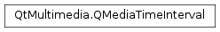

QMediaTimeInterval¶
Synopsis¶
Functions¶
- def
__eq__(, arg__2) - def
__ne__(, arg__2) - def
contains(time) - def
end() - def
isNormal() - def
normalized() - def
start() - def
translated(offset)
Detailed Description¶
The
PySide2.QtMultimedia.QMediaTimeIntervalclass represents a time interval with integer precision.An interval is specified by an inclusive
PySide2.QtMultimedia.QMediaTimeInterval.start()andPySide2.QtMultimedia.QMediaTimeInterval.end()time. These must be set in the constructor, as this is an immutable class. The specific units of time represented by the class have not been defined - it is suitable for any times which can be represented by a signed 64 bit integer.The
PySide2.QtMultimedia.QMediaTimeInterval.isNormal()method determines if a time interval is normal (a normal time interval hasPySide2.QtMultimedia.QMediaTimeInterval.start()<=PySide2.QtMultimedia.QMediaTimeInterval.end()). A normal interval can be received from an abnormal interval by calling thePySide2.QtMultimedia.QMediaTimeInterval.normalized()method.The
PySide2.QtMultimedia.QMediaTimeInterval.contains()method determines if a specified time lies within the time interval.The
PySide2.QtMultimedia.QMediaTimeInterval.translated()method returns a time interval which has been translated forwards or backwards through time by a specified offset.See also
-
class
PySide2.QtMultimedia.QMediaTimeInterval¶ -
class
PySide2.QtMultimedia.QMediaTimeInterval(arg__1) -
class
PySide2.QtMultimedia.QMediaTimeInterval(start, end) Parameters: - start –
PySide2.QtCore.qint64 - arg__1 –
PySide2.QtMultimedia.QMediaTimeInterval - end –
PySide2.QtCore.qint64
Constructs an empty interval.
Constructs an interval by taking a copy of
other.Constructs an interval with the specified
startandendtimes.- start –
-
PySide2.QtMultimedia.QMediaTimeInterval.contains(time)¶ Parameters: time – PySide2.QtCore.qint64Return type: PySide2.QtCore.boolReturns true if the time interval contains the specified
time. That is,PySide2.QtMultimedia.QMediaTimeInterval.start()<= time <=PySide2.QtMultimedia.QMediaTimeInterval.end().
-
PySide2.QtMultimedia.QMediaTimeInterval.end()¶ Return type: PySide2.QtCore.qint64Returns the end time of the interval.
-
PySide2.QtMultimedia.QMediaTimeInterval.isNormal()¶ Return type: PySide2.QtCore.boolReturns true if this time interval is normal. A normal time interval has
PySide2.QtMultimedia.QMediaTimeInterval.start()<=PySide2.QtMultimedia.QMediaTimeInterval.end().
-
PySide2.QtMultimedia.QMediaTimeInterval.normalized()¶ Return type: PySide2.QtMultimedia.QMediaTimeIntervalReturns a normalized version of this interval.
If the
PySide2.QtMultimedia.QMediaTimeInterval.start()time of the interval is greater than thePySide2.QtMultimedia.QMediaTimeInterval.end()time, then the returned interval has the start and end times swapped.
-
PySide2.QtMultimedia.QMediaTimeInterval.__ne__(arg__2)¶ Parameters: arg__2 – PySide2.QtMultimedia.QMediaTimeIntervalReturn type: PySide2.QtCore.bool
-
PySide2.QtMultimedia.QMediaTimeInterval.__eq__(arg__2)¶ Parameters: arg__2 – PySide2.QtMultimedia.QMediaTimeIntervalReturn type: PySide2.QtCore.bool
-
PySide2.QtMultimedia.QMediaTimeInterval.start()¶ Return type: PySide2.QtCore.qint64Returns the start time of the interval.
-
PySide2.QtMultimedia.QMediaTimeInterval.translated(offset)¶ Parameters: offset – PySide2.QtCore.qint64Return type: PySide2.QtMultimedia.QMediaTimeIntervalReturns a copy of this time interval, translated by a value of
offset. An interval can be moved forward through time with a positive offset, or backward through time with a negative offset.
© 2018 The Qt Company Ltd. Documentation contributions included herein are the copyrights of their respective owners. The documentation provided herein is licensed under the terms of the GNU Free Documentation License version 1.3 as published by the Free Software Foundation. Qt and respective logos are trademarks of The Qt Company Ltd. in Finland and/or other countries worldwide. All other trademarks are property of their respective owners.